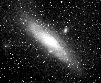
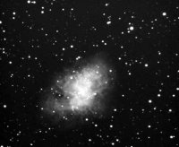
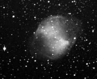
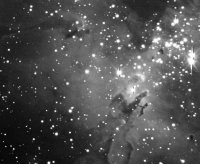
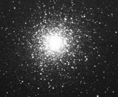
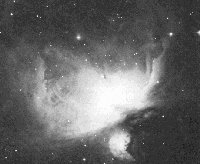
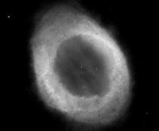
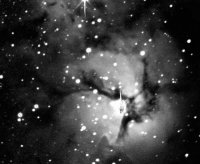
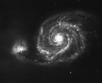

The Andromeda Galaxy is our nearest large galaxy. At a distance of 2.9 million light years, the galaxy is one of the chief items in the "Local Group" of galaxies, which includes our own.m31
Andromeda can be easily glimpsed by the naked eye under even moderate viewing conditions. The Persian astronomer Al-Sufi referred to M31 as "the little cloud." The first telescopic description of M31 is credited to Simon Marius in 1612. Andromeda is easily the most studied galaxy because it allows us to observe features of our own Milky Way galaxy from the outside.
| Distance (light years) | Size (arc min) | Magniudes | Right Ascension | Declination |
|---|---|---|---|---|
| 2.3M | 109 x 62 | 4.8 | 00:42.7 | +41:16 |
The Crab Nebula is one of the most famous supernova remnants in the night sky. The supernova was first noted on July 4, 1054, by Chinese astronomers. At its height, the supernova was about 4 times brighter than Venus and could be seen during the day for a period of more than three weeks.m01
The remnant of the this supernova was discovered in 1731 by the British astronomer John Bevis. Messier himself found it in 1758 while looking for Halley's comet. He soon realized it was no comet and the Crab Nebula became the first entry in Messier's famous catalog of celestial objects.
| Distance (light years) | Size (arc min) | Magniudes | Right Ascension | Declination |
|---|---|---|---|---|
| 7200 | 6 x 4 | 8.4 | 05:34.5 | +22:01 |
The Dumbbell Nebula was the first planetary nebula ever discovered. It is probably similar in structure to the Ring Nebula (M57), though its appearance is very different due to the angle by which it's viewed.m27
The nebula is also one of the brightest of its kind. It can easily be seen in a pair of 10x50 binoculars on a clear night in a dark sky location. The outer halo extends in size to about half the diameter of a full moon.
| Distance (light years) | Size (arc min) | Magniudes | Right Ascension | Declination |
|---|---|---|---|---|
| 970 | 8 x 4 | 7.6 | 19:59.6 | +22:43 |
The Eagle Nebula is located in the distant constellation Serpens. The source of light for M16 is the high-energy radiation of the massive young stars being formed in its core. By studying M16, astronomers hope to learn more about the early years of our own Sun.m16
Philippe Loys de Cheseaux discovered the nebula in 1745. Charles Messier was the first to notice that the stars in M16 appear to emit a faint glow, providing the first clues that the nebula was a stellar nursery.
| Distance (light years) | Size (arc min) | Magniudes | Right Ascension | Declination |
|---|---|---|---|---|
| 4600 | 35 x 28 | 6.4 | 18:18.8 | -13:47 |
The Hercules Cluster is one of the most prominent and best known globular clusters of the Northern sky. It was discovered in 1714 by the noted English astronomer Edmond Halley. Located in the Hercules constellation, M13 is visible to the naked eye on clear nights in dark sky locations.m13
The cluster contains perhaps as many as 500,000 stars, though some estimates push that number up to a million. M13 is estimated to be about 14 billion years old, which places the date of its origin near to the date of the galaxy's birth.
| Distance (light years) | Size (arc min) | Magniudes | Right Ascension | Declination |
|---|---|---|---|---|
| 2200 | 10 | 5.7 | 16:41.7 | +36:27 |
The Orion Nebula is the brightest diffuse nebula in the sky, easily visible to the naked eye, and stunning in telescopes of every size. Because of its beauty and brightness, M42 is sometimes referred to as "the Great Nebula in Orion." It covers a region in the night sky four times the area of the full Moon.m42
M42 is full of interesting structures and objects. Chief among these is the Trapezium Cluster, a cluster of four stars located in the heart of the nebula. M42 was first documented by the French astronomer and lawyer Nicholas-Claude Fabri de Peiresc in 1610.
| Distance (light years) | Size (arc min) | Magniudes | Right Ascension | Declination |
|---|---|---|---|---|
| 1300 | 66 x 60 | 4.0 | 05:35.4 | -05:23 |
The Ring Nebula is one of the most beautiful objects in the Northern sky. It was discovered by Antoine Darquier de Pellepoix in 1779. M57 is believed to be a planetary nebula, similar in structure to M27.m57
The Ring Nebula contains a central star, discovered by the German astronomer F. von Hahn in 1800. Observing the central star is one of the great challenges of amatuer astronomy. The star itself is a planet-sized white dwarf. The Ring Nebula was probably formed when this central star exploded long ago.
| Distance (light years) | Size (arc min) | Magniudes | Right Ascension | Declination |
|---|---|---|---|---|
| 2150 | 1.2 x 1 | 9.3 | 18:53.6 | +33:02 |
The Trifid Nebula is a red emission nebula with a young star cluster located at its center. The astronomer John Herschel was the first to use the term "Trifid" to describe this nebula's appearance. Charles Messier referred to M20 only as a "cluster of stars."m20
The nebula is located close to M8, the Lagoon Nebula, in the night sky. Both objects are easy to locate, making them popular targets for astrophotographers.
| Distance (light years) | Size (arc min) | Magniudes | Right Ascension | Declination |
|---|---|---|---|---|
| 2200 | 29 x 27 | 9.0 | 18:01.9 | -23:02 |
The Whirlpool Galaxy was one of Charles Messier's original discoveries. First catalogued in 1773, M51 is the dominant member of a small group of galaxies located over 37 million light years away. M51 is easy to see under dark sky conditions, but it is quite sensitive to light pollution.m51
The smaller galaxy NGC5195 is sometimes referred to as "M51B," while the larger galaxy is identified as "M51A." According to current theories, the spiral structure of M51A is a result of its encounter with the smaller galaxy. The interaction of the two objects compressed and disturbed the gas in several regions, resulting the formation of new young stars.
| Distance (light years) | Size (arc min) | Magniudes | Right Ascension | Declination |
|---|---|---|---|---|
| 25.1M | 11.2 x 6.9 | 8.1 | 13:29.9 | +47:12 |